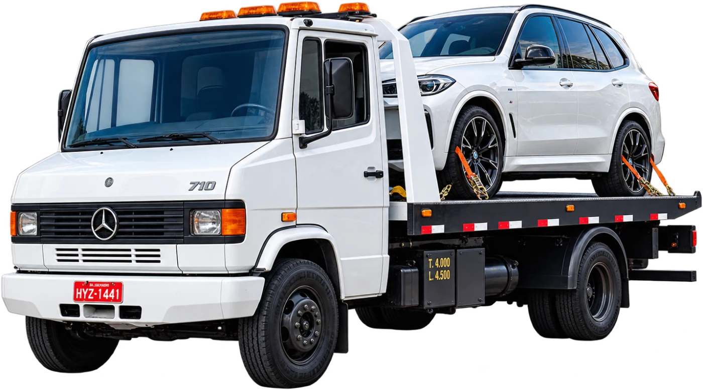
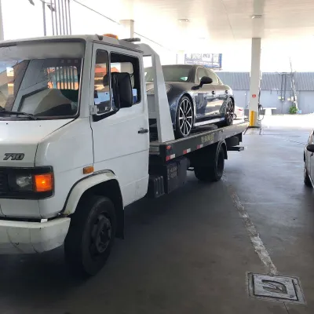
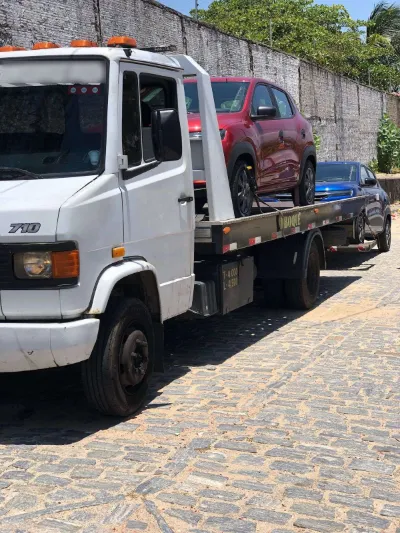
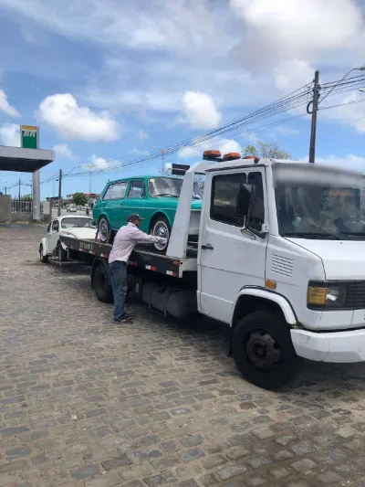
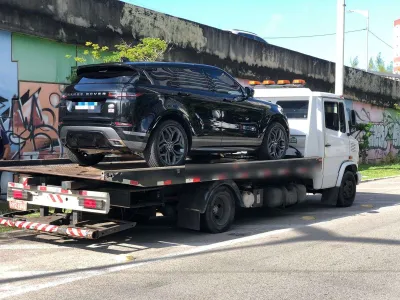
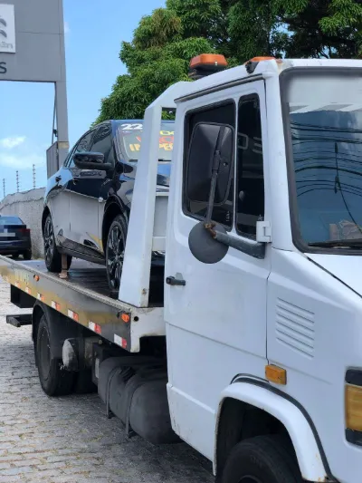
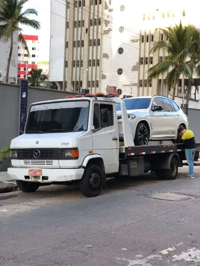
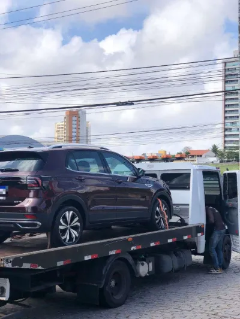
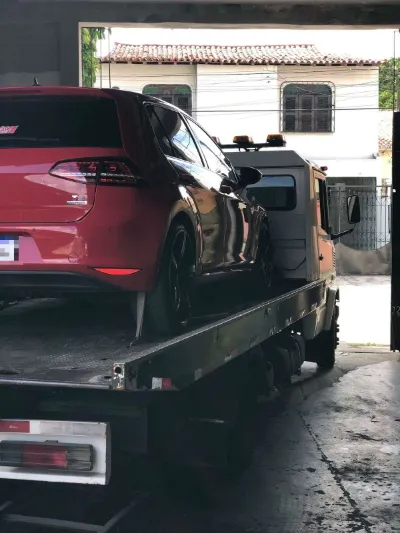

Guincho plataforma em Fortaleza, CE
Reboque O Chavez: guincho plataforma em Fortaleza, CE

Seu veículo deu prego? 🚗💨 É só chamar o Reboque O Chavez! Estamos prontos para te socorrer, com rapidez e segurança!
- Carros, SUVs e utilitários
- Seu veículo viaja seguro
- Orçamento pelo WhatsApp
Por que plataforma
Seu carro sobe inteiro. E desce do mesmo jeito.
Aqui o seu carro não vai arrastado. Ele sobe inteiro na plataforma, fica preso pelas rodas e viaja parado até o destino, sem forçar câmbio, suspensão ou pneus.
- Ideal para carros automáticos, 4x4 e com tração integral
- Seguro para carros rebaixados, esportivos ou batidos
- Chega do jeito que saiu, sem desgaste no caminho








Quem já chamou
O que dizem os clientes.
TEXTO DO DEPOIMENTO REAL
Contato
Precisa de guincho agora?
Chame no WhatsApp e mande sua localização. A gente responde e combina a retirada com você.
- WhatsApp e ligação
- (85) 98815-4053
- Atendimento
- Fortaleza, CE